해양위성 산출물 3D 가시화
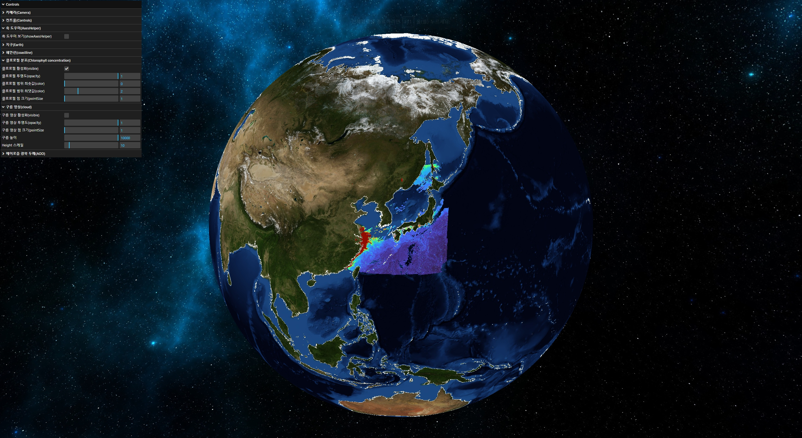목차
- 개요
- 주요 기능
- 위성관측 산출물 데이터 처리
- 다음 단계...
- 링크
1. 개요
개발 배경
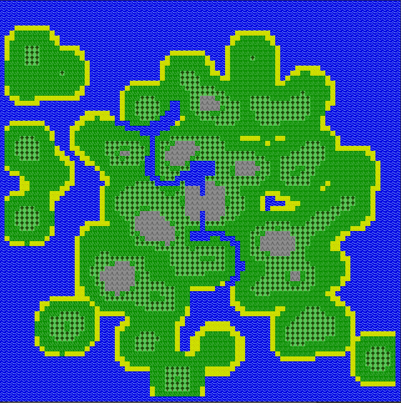- 광범위한 위성 데이터 특성에 맞게 2D 지도보다 실제 지구와 같은 3D 지도 위에 데이터 시각화를 해보고 싶었습니다.
- CPU-렌더링 기반의 기존 라이브러리를 활용해 몇 천 만개의 격자 셀로 이뤄진 대용량 격자 데이터를 렌더링하는데 한계가 있었습니다. GPU-가속 렌더링으로 빠른 속도로 대용량 데이터를 시각화하고 싶었습니다. 또한 WebGL과 OpenGL Shading Language(GLSL)를 통해 좀 더 Low-Level 단에서 다양한 시각화 방법을 커스터마이징해보고 싶었습니다.
개발 배경 CONT
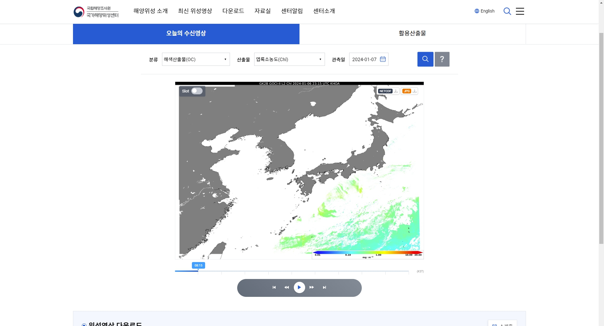- 개발자로서의 성장을 위한 사이드 미니 프로젝트로써 또한 회사적인 측면에서 새로운 관련 사업을 창출하기 위한 기회의 일환으로써 국립해양조사원 위성센터의 해양위성산출물 서비스를 사용자 측면에서 어떻게 개선시킬 수 있는지 고민하는 일련을 과정을 통해 프로젝트를 시작하게되었습니다.
- 문제점: 느린 속도, 줌인 줌아웃 불가, 변수 변경 시 바로 업데이트되지 않는 불편함
간단 소개
천리안 2B호 위성관측을 통해 산출된 클로로필 농도를 시각화한 화면 ✅ 클로로필(엽록소)은 바다의 일차 생산자로서 육지의 풀과 같습니다. 동시에 어류의 먹이 생물로써 수산자원의 지속적인 확보와 관리에 있어 중요한 존재입니다. 또한 해양의 여러 영양물과 이산화탄소를 흡수하여 생산된 식물성 플랑크톤의 광합성 색소로써 해양 오염이나 해양 생태계 현황과 기후 변화 등 여러가지 지표 정보로 사용될 수 있습니다.
사용 스택 및 기술
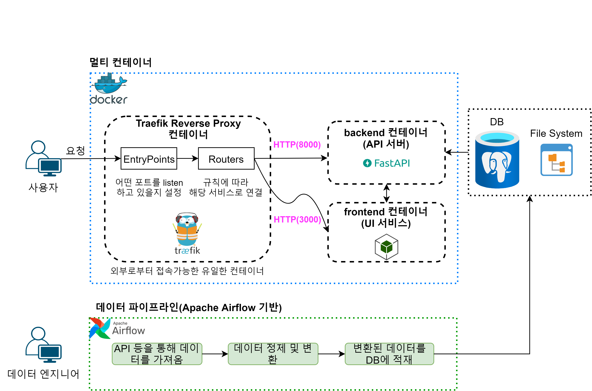- HTML, CSS, JavaScript
- Three.js, WebGL, OpenGL Shading Language(GLSL)
- Docker, Docker Compose, Traefik
왜 WebGL을 선택했는지?
웹 브라우저에서도 클라이언트의 GPU(그래픽 프로세싱 유닛)를 활용할 수 있도록 해주는 브라우저용 JavaScript API specification
➜ 웹/모바일에서도 GPU-가속 3D 렌더링 가능!
CPU vs. GPU
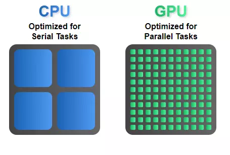- CPU: 고성능 but 적은 core 수
- GPU: 저성능 but 많은 core 수
➜ CPU 코어 자체는 GPU의 그것보다 강력하지만, 그래픽 계산 및 병렬 프로세스에 있어 다수의 코어로 이뤄진 GPU가 더 좋은 성능을 보여줍니다.
WebGL 렌더링 파이프라인
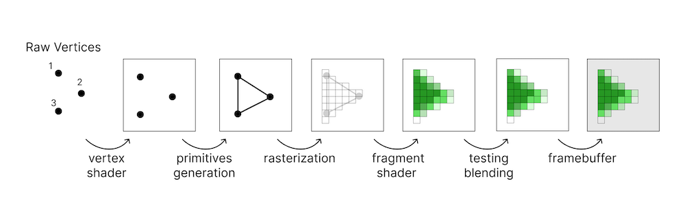➜ 픽셀이 백 만개라면, CPU는 백 만개의 픽셀을 하나씩 돌면서 픽셀에 점을 찍는 반면, GPU는 백 만개의 점을 찍고 래스터화 과정이 서로 격리되어 독립적이어서 빠르게 병렬적으로 처리할 수 있습니다.
2. 주요 기능
변수 컨트롤
- 다양한 변수(클로로필, 총 부유물 농도, 에어로졸 광학 두께, 구름 RGB 등)를 포인트 형태의 가시화 또는 텍스쳐를 이용한 래스터 형태의 가시화
- 변수 토글 온/오프, 투명도 설정, 최솟최댓값 조정, 색상 스케일 선택
고해상도 해안선
- 해안선 토글 온/오프, 투명도 설정, 단일 색상 선택
HeightMap
- 스케일 값 조정으로 육지 고도 및 해양 수심 반영
기타
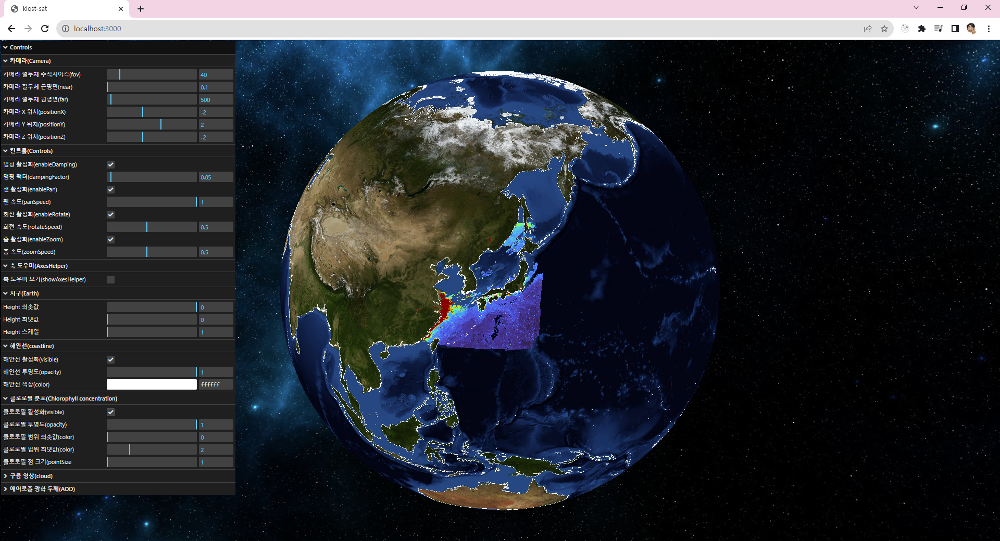- 그 외 다양한 파라미터들(카메라, 축 도우미, 줌 및 회전 속도 등) 등을 업데이트 시 화면에 바로 적용됨
3. 위성관측 산출물 데이터 처리
위성 산출물 데이터 출처
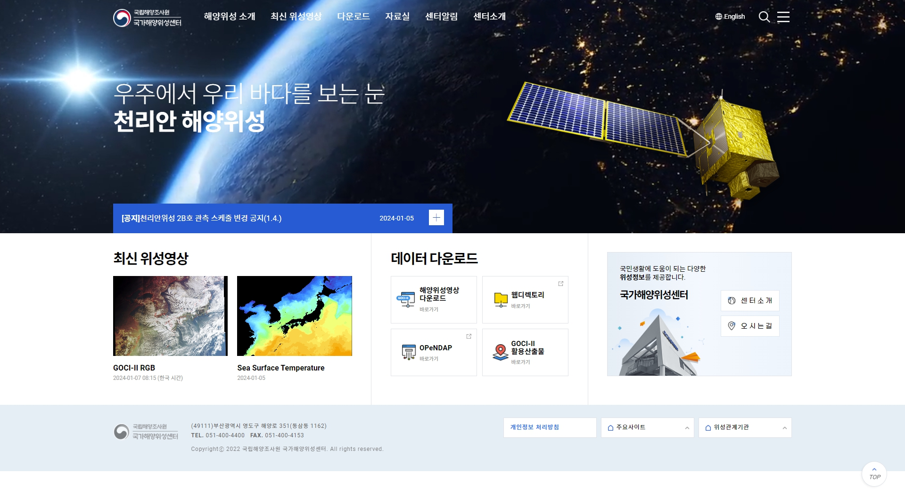- 데이터 출처: 국립해양조사원 국가해양위성센터(nosc.go.kr)
위성 산출물 데이터 포맷
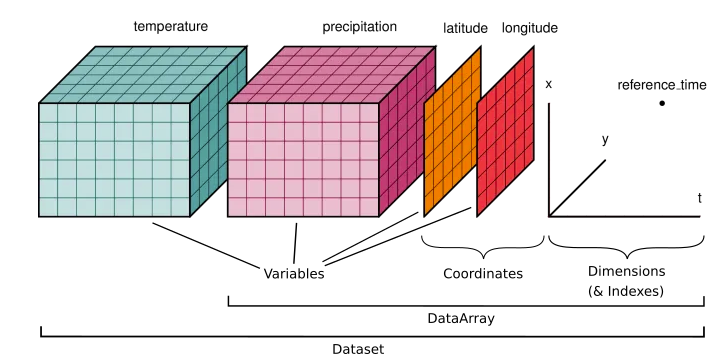- netCDF 파일 포맷은 다차원 시공간 대기(기상) 및 해양 관측 정보를 저장할 수 있는 대표적인 데이터 포맷입니다.
위성 산출물 데이터 포맷 CONT
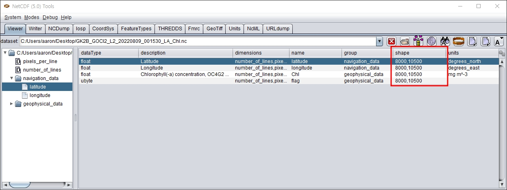- 한반도 주변 클로로필 위성 산출물 크기: 8000 X 10500 = 84,000,000 격자셀로 이뤄진 대용량 그리드 데이터
- netCDF 파일을 웹에서 바로 활용할 수 없어서 WebGL에 올리기에 적합한 텍스쳐 로 변환하기 위해 GDAL(Geospatial Data Abstraction Library) 프로그램을 활용했습니다.
위성 산출물 데이터 처리
python3.10 convert_nc_to_csv.py ~/projects/sat-data-processing/GK2B_GOCI2_L2_20220809_001530_LA_Chl.nc Chl
gdal_rasterize \
-ot Float32 \
-3d \
-te 116.0 22.0 146.0 50.0 \
-tr 0.01 0.01 \
-of GTiff \
-a_nodata -999.0 \
GK2B_GOCI2_L2_20220809_001530_LA_Chl.vrt GK2B_GOCI2_L2_20220809_001530_LA_Chl.tiff
gdal_translate \
-ot Byte -of png -scale 0 5 0 255 \
"GK2B_GOCI2_L2_20220809_001530_LA_Chl.tiff" \
"GK2B_GOCI2_L2_20220809_001530_LA_Chl.png"
- netCDF 포맷 파일의 변수 데이터셋으로부터 구름에 의해 마스킹처리된 nodata 값인 위치를 제외한 포인트 형태의 벡터 파일로 변환한다.
- gdal_rasterize 프로그램으로 포인트 형태의 벡터 파일을 래스터 형태의 GeoTiff 파일로 변환한다.
- gdal_translate 프로그램으로 최종적으로 WebGL이 인식할 수 있도록 Float 형식의 GeoTiff 파일을 Byte 형식의 PNG 파일로 리스케일링하여 변환한다.
4. 다음 단계...
- 프론트엔드 및 UI/UX 개선
- 벡엔드 API 서버 개발
- 데이터 파이프라인 구축
- Particle Simulation 적용
프론트엔드 및 UI/UX 개선

- 관측 날짜 및 시간 선택 및 색상 범례 등 부가 기능
벡엔드 API 서버 개발
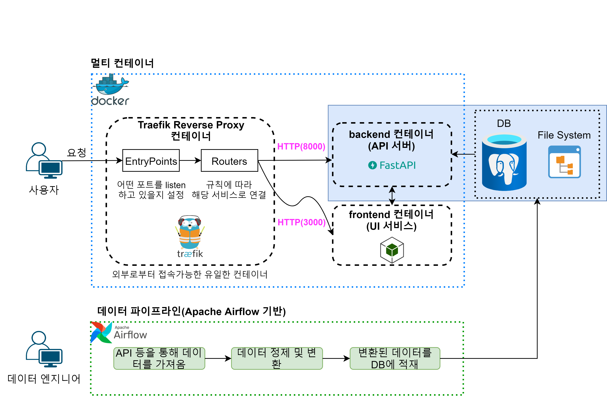- 현재 정적 파일을 불러와서 시각화하는 프로토타입이지만, 벡엔드 API 서버를 개발하여 사용자가 특정 변수 또는 시간을 선택하면 요청에 맞게 응답을 주도록 만들 예정입니다.
데이터 파이프라인 구축
- Airflow를 활용한 데이터 파이프라인 구축
- 데이터 워크플로우 작성, 예약 및 모니터링
파티클 시뮬레이션
- Transform Feedback 기술을 적용해서 해수의 유동이나 바람과 같이 크기와 방향을 동시에 갖는 벡터 자료를 입자 시뮬레이션으로 시각화해보려고 합니다.
5. 링크
GitHub 링크를 첨부했습니다.